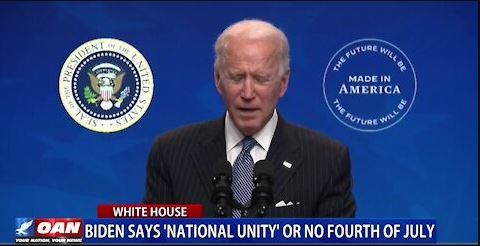

Biden says ‘obey!’And get some freedoms back by Independence Day
OAN Newsroom
Joe Biden declares if we 'put trust and faith in our government' we might just get our freedoms back by the Fourth of July as he says only 'national unity' will end the coronavirus pandemic and bring a return to normal life.This as Biden continues to rule by executive fiat and sign into law bills passed almost entirely along party lines.One America’s Natalie Harp has more.
Posted On: 2021-03-13T00:00:00

Content Date: 2021-03-13
Download Date: 2021-04-17
Document ID: L0C04A9DV